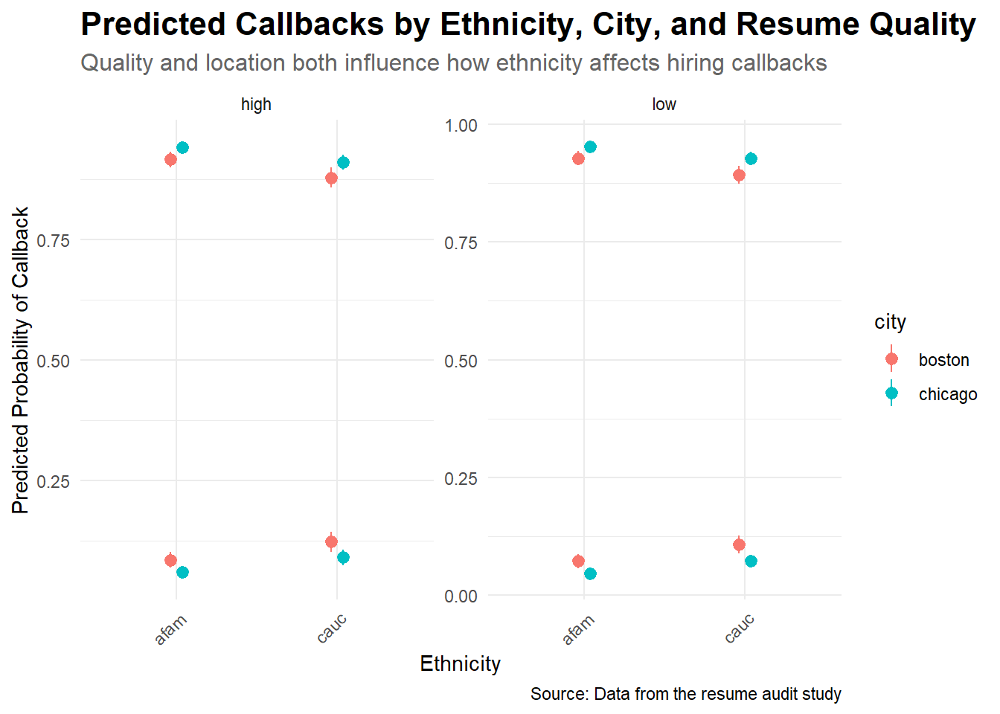

parsnip model object
Call: stats::glm(formula = call ~ gender + city + ethnicity + special +
quality, family = stats::binomial, data = data)
Coefficients:
(Intercept) gendermale citychicago ethnicitycauc specialyes
-2.6645 -0.1321 -0.4676 0.4477 0.8089
qualitylow
-0.1563
Degrees of Freedom: 4869 Total (i.e. Null); 4864 Residual
Null Deviance: 2727
Residual Deviance: 2633 AIC: 2645Resume Experiment
Background Information
Bertrand, Marianne and Sendhil Mullainathan. 2004. “Are Emily and Greg More Employable Than Lakisha and Jamal? A Field Experiment on Labor Market Discrimination.” American Economic Review, 94 (4): 991–1013. Data cleaned and discussed in “Quantitative Social Science: An Introduction” by Kosuke Imai.
“We study race in the labor market by sending fictitious resumes to help-wanted ads in Boston and Chicago newspapers. To manipulate perceived race, resumes are randomly assigned African-American- or White-sounding names. White names receive 50 percent more callbacks for interviews. Callbacks are also more responsive to resume quality for White names than for African-American ones. The racial gap is uniform across occupation, industry, and employer size. We also find little evidence that employers are inferring social class from the names. Differential treatment by race still appears to still be prominent in the U.S. labor market.”
Two Scenarios
- Imagine that you are a contemporary historian studying US employment in the year 2000 in Baltimore. You want to understand the process by which some people got jobs and some did not.
Units: Individuals of working age (typically 18–65) residing in Baltimore in 2000 Outcome: Employment status (Employed vs. Unemployed) Treatment / Covariate(s): Education level, age, gender, race/ethnicity, job training history, prior employment, criminal record, neighborhood of residence Data Source U.S. Census 2000, Baltimore Department of Labor records, local
- Imagine that you work for a civil rights organization in Chicago. You want to understand the process by which black US citizens are discriminated against in hiring today.
Data Generating Mechanism
# A tibble: 6 × 7
term estimate std.error statistic p.value conf.low conf.high
<chr> <dbl> <dbl> <dbl> <dbl> <dbl> <dbl>
1 (Intercept) -2.66 0.129 -20.6 1.44e-94 -2.92 -2.42
2 gendermale -0.132 0.133 -0.993 3.21e- 1 -0.398 0.124
3 citychicago -0.468 0.108 -4.32 1.58e- 5 -0.680 -0.256
4 ethnicitycauc 0.448 0.108 4.14 3.54e- 5 0.237 0.661
5 specialyes 0.809 0.108 7.49 7.13e-14 0.597 1.02
6 qualitylow -0.156 0.107 -1.46 1.44e- 1 -0.367 0.0531This is my data generating mechanism.
\[ \begin{equation} \begin{aligned} \text{logit}(\Pr(\text{call} = 1)) = & -2.66 - 0.13 \cdot \text{gendermale} - 0.47 \cdot \text{citychicago} \\ & + 0.45 \cdot \text{ethnicitycauc} + 0.81 \cdot \text{specialyes} - 0.16 \cdot \text{qualitylow} \end{aligned} \end{equation} \]
Temperance
What are the questions you want to answer?
How can you use the marginaleffects package to answer them?
Group Estimate Std. Error z Pr(>|z|) S 2.5 % 97.5 %
no 0.9448 0.00633 149.38 <0.001 Inf 0.9324 0.9572
no 0.9361 0.00714 131.17 <0.001 Inf 0.9221 0.9501
no 0.9640 0.00454 212.15 <0.001 Inf 0.9551 0.9729
no 0.9108 0.00990 91.96 <0.001 Inf 0.8914 0.9302
no 0.9361 0.00714 131.17 <0.001 Inf 0.9221 0.9501
--- 9730 rows omitted. See ?print.marginaleffects ---
yes 0.1180 0.01350 8.74 <0.001 58.6 0.0915 0.1444
yes 0.0562 0.00685 8.20 <0.001 51.9 0.0428 0.0696
yes 0.0872 0.01122 7.77 <0.001 46.8 0.0652 0.1091
yes 0.0651 0.00786 8.28 <0.001 52.9 0.0497 0.0805
yes 0.0852 0.00943 9.04 <0.001 62.5 0.0668 0.1037
Type: prob
Attaching package: 'plotly'The following object is masked from 'package:ggplot2':
last_plotThe following object is masked from 'package:stats':
filterThe following object is masked from 'package:graphics':
layout